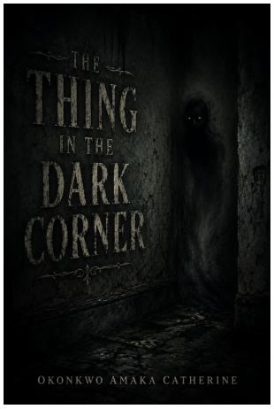

Words become worlds.
Welcome to the world of Ink & Pages — a collection of stories exploring mystery, the unknown, and the shadows that linger.

FEATURED STORY
HORROR · 2026
The Thing That Watches in the Dark Corner
A seven-chapter horror story that begins with a strange presence watching from the dark corner of a house and unfolds into a series of unsettling encounters.
Start Reading →THE WRITER
Every story begins with a question.
Discover the writer behind the stories, her inspiration, and the ideas that shape her work.
Meet the Writer →